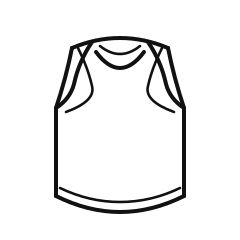
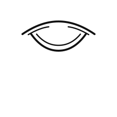
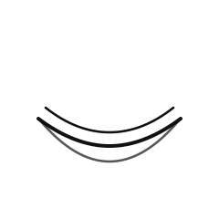

01 / TANK TOP
TANK TOP
肩幅を細くしすぎず、ネックとアームホールのバインダーだけを残した、視認性優先の正面線画です。

- 特徴保持: ラウンドネック、深めのアームホール、緩いラウンドヘム
- 簡略化: 縫い目のノイズと不要なシワ線は削減
DETAIL / BINDING

ネックの開きとバインダー幅の確認用。
DETAIL / HEM

前裾のラウンド感だけを残した簡略ディテール。